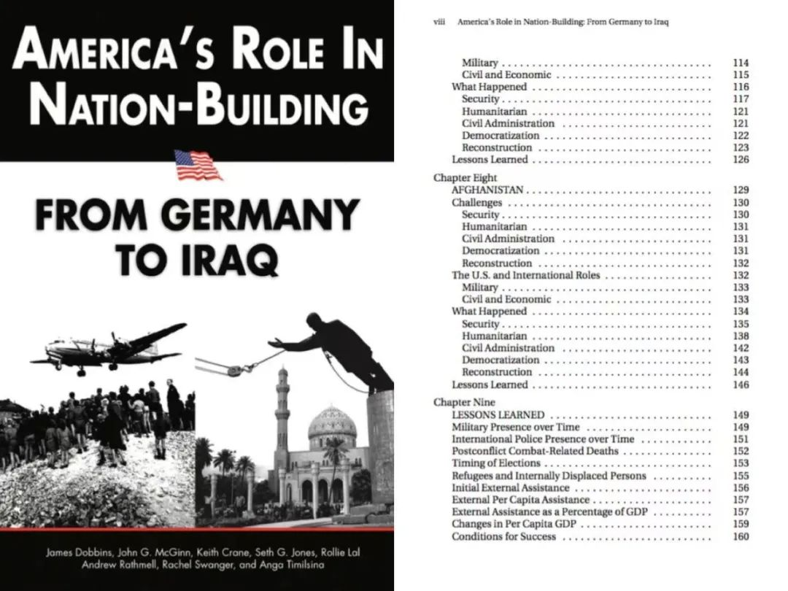

收录于合集

导 读 ****
兰德公司是世界范围内最具影响力的智库之一，它在研究上的独立性与创造性、对美国外交政策的重大影响力以及上亿美金的年营业额使无数后来者以成为 “第二个兰德” 为目标。《兰德公司（1989-2009）：美国战略学知识的重构》一书作者质疑了这种 “知识独立” 的神话，揭示在“军事知识复合体”的结构中，兰德公司与官僚机构和军方紧密结合、相互依赖。 在后冷战时期知识危机和战略研究行业激烈的机构竞争中，兰德逐渐丧失议题设置的主动权：对内，其研究成为不同军种、国防部和国会之间体制斗争的论证工具，对外，兰德公司逐渐沦为美国政府的政策工具。 本文节选自该书第三部分，该部分以针对失败国家的“民族建构”理论的国际化传播为例，展示兰德的思想输出绝非只是符号性/交流性的，它与美国的对外政策高度同构。文章给予我们一个警示：在美国的军事霸权没有直接实行控制的地方，文化霸权可能已经以某种隐秘的形式确立起来了。文中小标题由 欧亚系统科学研究会 自拟，文章仅代表个人观点。
正 文
我们从美国国际关系专家的话语中发现了这种思想趋势，即以华盛顿为出发点“构想世界”，同时也“为世界出谋划策”。这种信念不仅与机构自身的制度发展相关，例如兰德公司在欧洲和中东设立分部。同时，这种信念还深深扎根于美国在战略研究领域所具有的独特能力之中。凭借着这种无可匹敌的能力，美国可以创作出一部国际关系著作，并在世界范围内进行推广。法国政治学家埃尔·韦库托- 贝加里（Herve Coutau-Begarie）认为： “今天，战略研究领域完全由美国主导。美国最先对这个领域中的若干概念方法和运用程序进行定义，然后把它们编成一部枯燥乏味的长篇作品推向世界。这其实是一种新的霸权主义手段文化霸权，但很少有人尝试抵制这种霸权。”
兰德公司通过开拓国际市场的方式传播一种美国化的战略研究观念，由此建构出一系列独特的活动，今天我们称之为 “治理学” （sciences de gouvernement）。我们在“治理学”和阐述欧洲特有治理模式形成过程的最新社会历史著作中找到了一些相同的动力。二者都对如何理解知识的中立性这个问题进行了探讨，知识中立性的纯客观要求掩盖了一种构建社会现实的内在标准机制。因此，追随者的行为路径也得以掩藏。在没有对这些观点进行深入分析之前，我们就几乎完全以此为准则。实际上，这样并不利于对社会政治起源进行个性化的解读。
换言之，分析这些参与者的研究成果有助于进行系统思考，因为他们提供了一套附具体建议、可以推广至海外的阐释性框架，这些建议在一定程度上是实现有效治理（bonne gouvernance）的动力源。
01
民族建构浪潮兴起
冷战结束后，许多国家摆脱殖民统治获得独立。因此，出于新的政治考虑国际社会将这些国家的“体制问题”纳入了国际议程。尽管从历史角度看，认为两极格局结束后世界向野蛮时代倒退这种观点根本站不住脚，但在当时这几乎是一种主流观点。
冷战时期，地区冲突造成近4000万人死亡，这个数字在当时足以引起一系列的政治呼吁。
90年代，一批新词开始登上历史舞台：流氓国家、令人担忧的国家、问题国家、毒品国家、恐怖主义国家、失败国家、衰落国家和崩溃国家等，美国和欧洲用这些词来表示对非洲、中亚、拉美和中东某些国家的担忧。
“失败国家”这个概念可以类比企业破产，它传递了这样的信息：国家衰弱与崩溃的症结在于治理的无效。这种全新的判定标准再次将我们引向“有效治理”这个概念：它被奉为公共事务管理领域的实践指南，能够让瘫痪的政治体系重现生机。
“9·11事件”后，美国安全领域与发展领域的专家达成共识，将目光投向战后重建问题。遭遇这次恐怖袭击后，美国的对外政策发生了调整。因此，传统意义上对美国对外政策的划分显然已经不适用了。 也就是说，这起恐怖袭击由一帮海外团伙策划，他们没有利用任何国家的名义，以致于美国孤立主义与干涉主义之间的理论分歧变得毫无意义。 许多政府专家和民间专家认为，“民族建构”应该能够防止恐怖主义横行的“灰色地带”的形成和继续存在无论是从伦理角度还是现实角度来看，解决失败国家的问题都是众望所归。
“失败国家”这个关于恐怖主义的新提法并非毫无意义。根据国际与国家安全机构的分析，之所以发生这些恐怖袭击事件，是因为美国没有兑现对脆弱国家的承诺。例如阿富汗、巴基斯坦，这些国家的王权已经衰弱甚至完全倾覆，以致于出现“灰色地带”。所谓“灰色地带”，就是指不受任何国家监管，恐怖分子和犯罪团伙横行的区域。 这个分析结果使美国重新意识到，需要在这些原本只受到国际和国家发展机构关注的地区投入军事和外交努力。由此，安全领域和发展领域开始出现利益交织。 虽然现在看来两者似乎相去甚远，但催生了一种组合政策。这种组合政策的目的就是帮助这些国家摆脱地区冲突，重建他们的国家和民族。
美国的政策调整再度掀起“国家建构和民族建构”（State & Nation Building）的浪潮。“9·11事件”后，国家建构和民族建构风靡一时，美国学术界、专家界和政界涌现了大量与此相关的研究著作。然而，令人吃惊的是，美国战略研究领域的专家们却对此颇有微词。卡耐基国际和平基金会主任玛瑞纳·奥塔维（Marina Ottaway）认为，“不应将这种普遍认同强加给已经完全分裂的民众，而应尽力组建起能够进行有效治理的国家。” 然而，正如约翰·霍普金斯大学教授弗朗西斯·福山所说，“我们现在讨论的只能称为‘国家建构’，而不是‘民族建构’”。 詹姆斯·多宾斯（James Robbins）在一份兰德报告中写道：“民族建构的首要目的在于平息社会动荡，而不是让繁荣社会走向没落、让民主社会走向专制。”这种说法虽然巧妙，但是难以让人信服。
事实上，我们退一步就会发现，从理论上说，按照目的论的分析思路，国家始终被视为“政治制度集中化过程的最后阶段，这是任何社会在发展过程中都要遵循的普遍规律”。然而，由于缺乏实际的权威参照，这并没有形成认知共识。所以兰德公司将詹姆斯·多宾斯的个人主张转化为公司主张，并成功实施了一系列知识战略。多宾斯在长篇报告《美国在民族建构中的角色》中从未论及民族建构的必要性和益处，反而大谈“失败国家”在安全、人道主义、政治和行政管理方面的重建问题。分析这些名目繁多的数据：军队编制人数、伤亡人数、难民数、国内生产总值中的经济援助占比，是为了将合适的政治军事实践提炼为直观清晰的数据教程。 然而，这种量化方式仍然被圈定在一定的认知框架内。这种认知框架被一种标准化的观念所主导，目的就是传播自由民主思想和市场经济理念。
 《美国在民族构建中的角色》（2003）一书讨论了冷战后美国介入德国、日本、索马里、波斯尼亚、科索沃、阿富汗、伊拉克的军事、政治、经济活动，并试图从这些案例中总结出“民族构建”的最佳实践（best practice）
直到今天，兰德公司关于“民族建构”的研究依然备受追捧，以至于类似的文章接连出现，例如，《联合国在民族建构中的角色》（UN’ s Role in nation- Building）、《欧洲在民族建构中的角色》（Europe’ s Role in Nation- Building）。还有一份报告甚至简单地直接命名为《民族建构入门指南》（The Beginner’ Guide to Nation Building）。多宾斯将“民族建构”工程定义为“运用武装力量进一步推动政治和经济改革，以达到平息社会内部及其周边冲突的目的”。 这种以军事为中心的观念反映了美国发展部门与安全部门之间的不平等关系。 例如美国国防部拥有的财富和资源，其他部门难以企及。更重要的是，由此可见，美国的军事思想输出过程，从一开始就没有注重结合具体的国家环境。
02
“胜利的发展主义”及其困境
从社会学角度看，“民族建构”既不在安全部门（部队、警察），也不在发展部门（部委办公室、国家发展办事处、国际组织、联合国开发计划署和世界银行）的权责范围内，而是被纳入 民用一军事动力体系 和当今“ 人道主义军事化 （militarization Humanitaire）一 军事人道主义 （humanitarisation du militaire）”的双重进程之中。由于对“冲突后国家”概念的分析也存在上述两种解释，所以这个词被赋予了很多意义，有时某些意义看起来甚至相互矛盾。对那些被纳入考虑范畴的国家来说，民族建构同样须遵循安全领域与发展领域之间的力量对比关系，这种关系因国家而异。由此，我们能更好地理解多宾斯在美国提出的“民族建构”概念。
从历史角度看，兰德报告中关于冲突后国家重建问题的思考，可以说是对 “胜利的发展主义 （developpementalisme triumphant）——借用波特兰·巴蒂的说法——著论的续写。“胜利的发展主义”诞生于二战后的非殖民化阶段，在60年代达到顶峰，但之后10年逐渐衰落。 这个时期出现了一部与发展主义相关的著作：《经济成长的阶段》 。 这部著作以时间为序罗列了旧殖民地国家进行民族一国家建构需要经历的阶段 ，沃尔特·罗斯托（Walter Rostow）在书中提出了著名的经济成长阶段论。
《经济成长的阶段》一书的畅销使罗斯托成为名噪一时的经济现代化专家。该书按照资本主义国家的历史经验抽象出五个发展中国家必经的经济成长阶段。罗斯托后来成为约翰逊总统的顾问。图为约翰逊总统与罗斯托。图源：getty image
然而，60年代这些以西方为中心的理论，很快湮没在历史长河之中。因为这些理论构想在现实中遇到了许多挑战，例如，专制独裁、政治腐败、内战、政变、部分国家体制失效以及与民族共同体相抗衡的种族清洗等。重建问题背后是被干预国家的系列建设问题。除此之外，“民族”这个概念，首先是指限定的公民关系，以及一个“想象的共同体”，借用本尼迪克特·安德森（Benedict Anderson）的话。
西方的民族- 国家模式经历了几个世纪的发展完善，一度被视为实现政治现代性的最终阶段。人们将“国家”和“民族”概念联系起来，甚至混为一谈。但事实上，二者存在着本质的区别。“国家”这个词具有法律和制度内涵，而“民族”关乎一个人类群体的道德、文化和族群问题。
由此可见，由于缺乏统一的标准，美国和其他国家的专家学者使用的“民族- 国家”，只是一个无效的概念。不过，虽然没有统一标准，“民族建构”却已经成为一个名副其实的议题。美国2002年发布的《国家安全战略报告》指出，“今天，美国所面临的威胁更多地来自失败国家而不是征服性国家”。难道是这种理论上的缺陷，使兰德公司能够确定讨论中必须考虑的要素，而且使得美国的思想理念能够在其盟国间顺利传播？
03
国际社会的反应
欧洲军队的同质化建设可以通过北约内部的制度调整获得成功。但是，如果希望“民族建构”思想顺利推广，则需慎之又慎。由于“民族建构”设想缺乏统一的参照标准，加上其独有的“制度特性”，即多宾斯提出的军事之于人道主义的优势地位。因此，“民族建构”一旦提上国际议程，可能很快会在输入国水土不服。
然而，这算是一种失败吗？根据美国的主要欧洲盟国在这个时期的外交表现，我们发现 在面对国际关系方面呼声极高的新主张时，无论各国是支持还是反对，最重要的首先在于表明立场。 因此，从某种意义上说，兰德公司的工作仍然是对被认为具有适用意义的议题进行管控。
法国 外交部2005年成立了预防冲突和重建办公室。该办公室不久前起草了份反思性报告，报告谈及民族建构理论，以及法国在后冲突国家干预问题上进行的延伸。一名外交人员解释道：“民族建构领域已被美国垄断，如果我们不想再受到詹姆斯·多宾斯等人的影响，我们就要在这方面投入努力并做出成绩。”
英国 当局虽然支持“民族建构”，但从不会主动提起这个问题。 德国 的专题著作中倒是经常提到这个概念，但字里行间总是表露出质疑与防备。2005年，德国研究员发起一项雄心勃勃的计划：出版一部关于重建问题的英文奠基之作，并在书中明确反对多宾斯和兰德公司的观点。这部颇具批判性的著作就是埃森大学发展和平研究院政治学家若尚·希普勒（Jochen Hipple）主编的《民族建构：和平冲突转型的核心概念？》（Nation-Building：A Key Concept for Peaceful Conflict Transformation?），它集结了众多理论家、实践家在重建方面的研究成果。
在希普勒看来，“民族建构”绝非多宾斯所言，仅限于解决安全问题。“重建”需要在相关国家的各个机关投入大量资金。希普勒认为，为达到自上而下调节社会关系的目的，这些资金首先应该用于改善民众生活，而不是建设国家上层建筑。
《民族建构：和平冲突转型的核心概念？》的其他编著者德国联邦经济合作与发展部的乌尔丽克·霍普（Ulrike Hopp）和阿道夫·克洛克-莱施（Adolf Kloke-Lescl），发文批判美国这种 “外向排他性民族建构” （Nation-Build externalise）主张，力主 “内向包容性民族建构” （Nation-Building endogene）。准确地说，这些德国专家认为，美国民族建构模式的实质是在当事国推行技术主义思想和统制经济政策，所以他们希望表明观点与美国划清界限。霍普和克洛克·莱施不赞成从外部入手为当事国民众建构民族国家。虽然霍普和克洛克·莱施承认，重建的第一步是国家集权，但同时他们强调，第二步应该是成立国会，恢复国家政治体制，借助外部力量引导民间团体直接参与建构。在这场围绕“民族建构”的辩论中，最出乎意料的就是法德两国对多宾斯团队霸权输出思想的不同理解，以及这个主张在美国国内遭遇的失败。
按理说，如果多宾斯等人的主张能够成功推行，首先受益的将是美国。美国对伊拉克干预期间，数位政治决策者的言论也证实了这点。2003年，保罗·布雷默开始担任美国驻伊临时管理当局最高行政长官，他当时对多宾斯的论文大加赞赏，还把它推荐给国防部长拉姆斯菲尔德。布雷默在回忆录中写道：
我把多宾斯的论文摘要发给拉姆斯菲尔德。还给他留了一张便条：“你可以看看这个。”但之后我没有收到任何回复。
之后，我们在美国思想的国际传播进程中发现了布迪厄所形容的“事与愿违的效果”。实际上，这些思想观念在对外输出过程中脱离了原生环境。它们以一种扭曲的霸权形式出现，与其本来面貌相去甚远。从几位法国外交官的访谈中，我们就能发现这种变化。这些外交官坚信，这是美国精心策划的一项系统工程，目的就是打造一种思想霸权模式。不过，我们在这里描述的是一个自我资助式研究的最初背景，这一点在其原生领域中没能得到足够的重视。
布迪厄重点指出思想观念的国际传播中这一至关重要的层面，他写道：因此，一部外国作品的意义和功能至少由两个因素决定，即输入场域和输出场域。首先，由于在输出国，作品的意义和功能经常被忽视。而一部作品由一国传入另一国需要经历一系列社会活动……最后才是进行阅读。读者在阅读过程中形成的认知范畴和产生的一系列问题，构成了一个截然不同的生产场域。
尽管起源于美国的民族建构工作没有得到国际社会的一致认同，但我们必须承认，美国使民族建构及其关键要素具有了适用意义。如果只从政治学角度考虑，这与过去几十年间发展起来的议题没有什么不同。
从这个角度看，无论兰德公司在海外的发展具有多么突出的创新特色，也只能算作一种跨越民族主义的动力，这与我们在人权和环保领域看到的一样。兰德公司的专家们在向欧洲国家传播思想理念时，始终无法消除横亘于心的“国界”意识，因此也就无法与这些输入国形成良好的互动关系。
冷战结束后，美国决策者虽然开始将其战略研究成果推向世界，但是忽略了这些研究成果背后的社会因素。他们既没有考虑这些研究专家与美国政府之间或多或少的联系，也没有考虑研究经费的来源问题。事实上，即使华盛顿的战略学家真的在为世界出谋划策，他们首先考虑的也是自己最大的资助者美国国防部的利益。
（本文删节自《兰德公司（1989-2009）：美国战略学知识的重构》，南京大学出版社，2018年。注释从略。如有侵权，请联系删除。）
文章观点不代表本平台观点